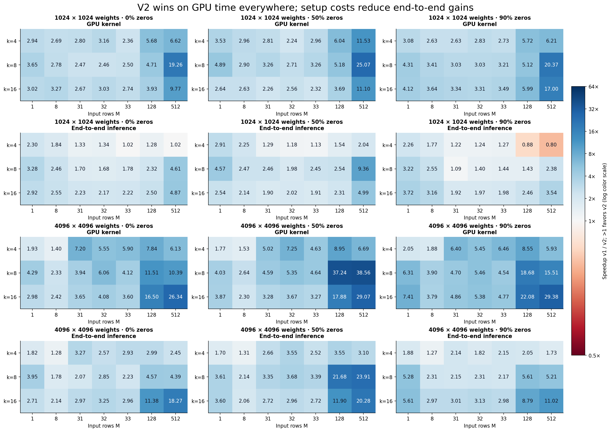
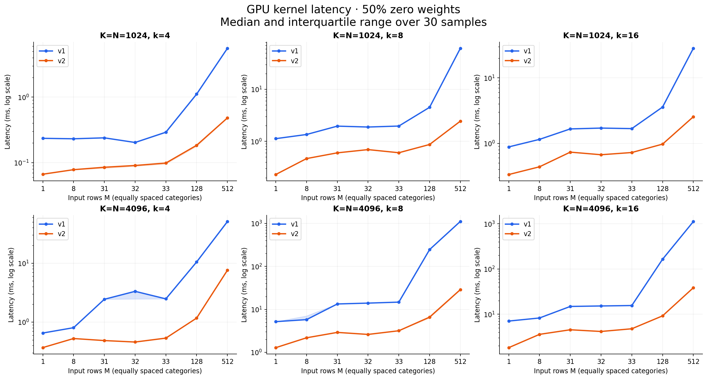
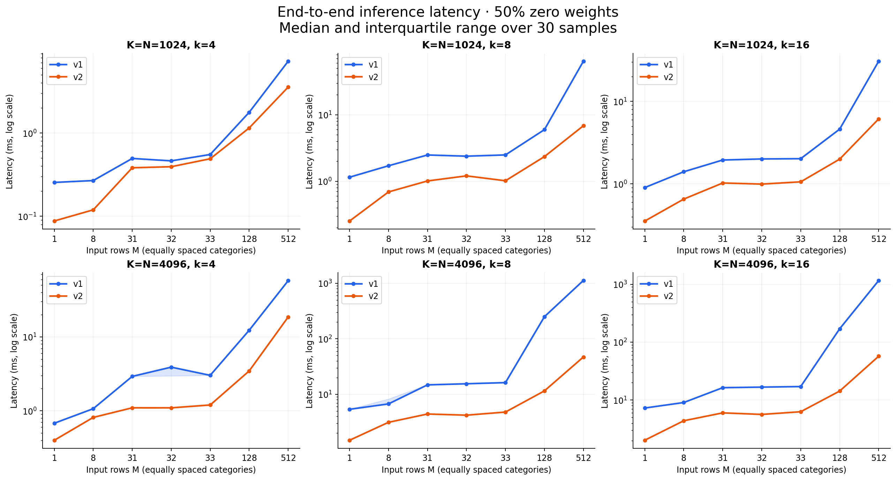
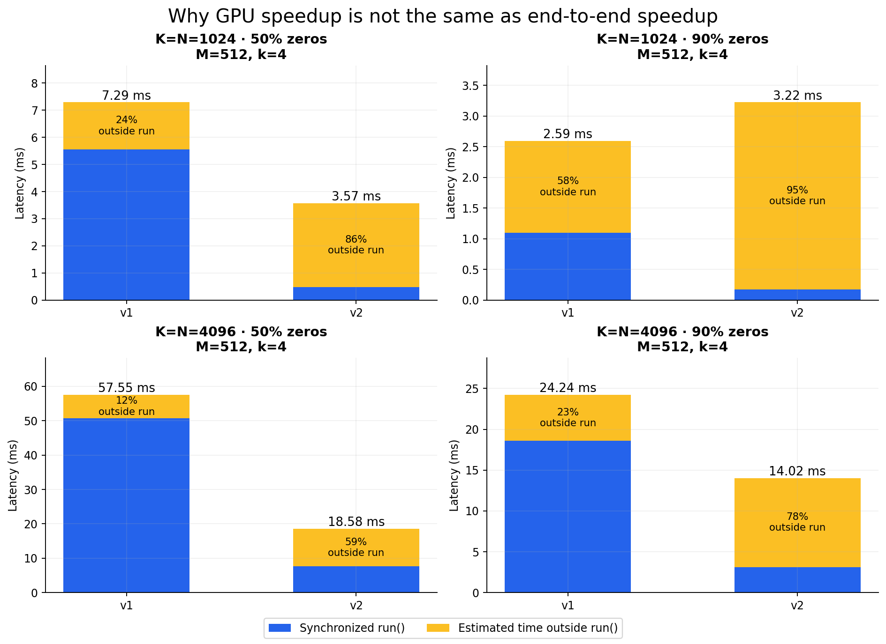
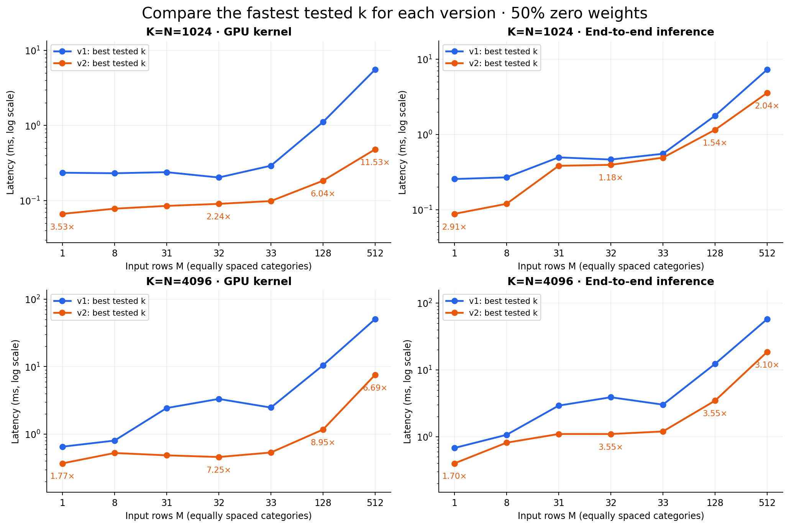

RTX 2080 Ti · 126 workloads per version · 30 samples per metric · all validation checks passed.
V2 wins all 126 GPU-time comparisons and 124/126 end-to-end comparisons. Kernel-time median speedup across workloads is 3.93×; end-to-end median speedup is 2.45×. See analysis notes for limitations and best-k comparisons.
All 126 workloads, for GPU-event and end-to-end timing. Numbers are ratios of medians; red means v2 is slower.

Absolute latency matters: a large speedup at one k does not imply that k is fastest. Bands show sample IQR, not confidence intervals.

Absolute latency matters: a large speedup at one k does not imply that k is fastest. Bands show sample IQR, not confidence intervals.

Yellow is median(end-to-end) minus median(run), an estimate including allocations and transfers plus v2 input transposition. It is not a direct measurement of transpose alone.

Each point independently selects the lowest median among k=4,8,16. Labels show v1/v2 speedup; selection uses the same timing samples, not a separate tuning run.
